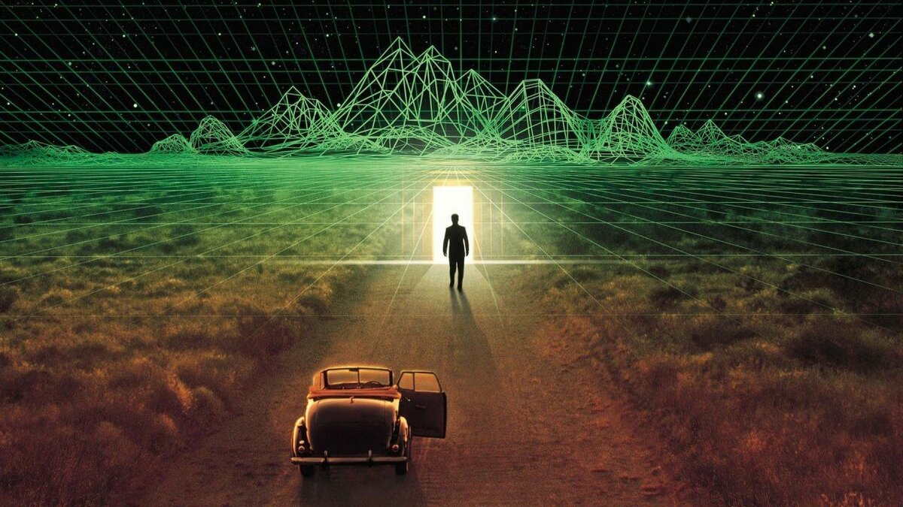

Гипотеза симуляции
Гипотеза симуляции — философское положение о том, что реальность является симуляцией (чаще всего предполагается, что это компьютерная симуляция). Чтобы симуляция выглядела реалистично для реципиента, программа подстраивается под его восприятие, формируя материальные объекты, разум и сознание реципиента. Главной работой в этой области считается статья Ника Бострома «Доказательство симуляции», опубликованная в 2003 году (первая редакция — в 2001 году) в журнале «Philosophical Quarterly». Гипотеза симуляции изучается в рамках таких философских направлений, как футурология и трансгуманистическая теория. Кроме того, наработки специалистов по гипотезе симуляции широко используются с начала 1990-х годов в массовой культуре, например, в трилогии фильмов «Матрица»..
Истоки гипотезы симуляции
Ещё в Древней Греции Пифагор основал школу, изучавшую базовую философскую концепцию своего создателя об иллюзии всего существующего и реальности исключительно чисел и их бесконечных комбинаций, которые формируют все феномены обозримого бытия, подвластные познанию их человеком. Представление о том, что реальность — это не что иное, как иллюзия, выдвигал вслед за Пифагором древнегреческий философ Платон, который пришёл к выводу о том, что материальны только идеи, а остальные объекты — лишь тени
Такого же подхода придерживался и Аристотель, но с поправкой на то, что идеи выражаются в материальных объектах. Кроме того, положение об иллюзорности реального является одним из ключевых в некоторых религиозно-философских учениях, например, в целом ряде индийских философских школ, в рамках которых рассматривается концепция майи. Майя — иллюзия бытия, в частности, повседневного бытия человеческого существа на фоне существования Вечного Абсолюта (Брахмана в индуизме или Нирваны в буддизме),
С развитием цифровых технологий теория о том, что реальность — это продукт компьютерной программы, которая была написана и реализована некоей другой цивилизацией, начала приобретать большое количество сторонников. Важным теоретическим подспорьем в развитии гипотезы симуляции и некоторых других подобных положений стало появление термина «виртуальная реальность», предложенного в 1989 году изобретателем Джароном Ланье. Значительную роль в этом сыграли и деятели массовой культуры, создавая различные творения на тему взаимодействия человека и цифровой среды. Особенно примечательна в этом плане игровая индустрия, которая в 1990-х годах представила такие игры, как Quake, Doom и некоторые другие. Так как они позволяли создавать целые миры на экранах компьютера, гипотеза симуляции стала набирать популярность по всему миру.
Ключевые понятия и термины
Футуролог Д. А. Медведев в статье «Живём ли мы в спекуляции Ника Бострома?» перечислил главные понятия, которыми оперируют специалисты в рамках научного дискурса по этой тематике:
- Постчеловеческая цивилизация — цивилизация, которая, скорее всего, заменит человечество. По мысли Ника Бострома, сильные изменения в человеке, которые породят новую цивилизацию, будут обусловлены развитием новых технологий, вычислительной техники, нанотехнологий, технологий искусственного интеллекта и многими другими.
- Симуляция — продукт технологий в области вычислительной техники, призванная создавать модель восприятия мира, сознания и разума у реципиентов, а также материальные объекты, которые его окружают.
- Историческая симуляция — симуляция, которая помещает реципиентов в определённые искусственно воссозданные исторические эпохи.
- Базовая цивилизация — цивилизация, которая создаёт симуляцию первого уровня, при этом не проживая в симуляции.
- Симуляция первого уровня — симуляция, запущенная базовой цивилизацией.
- Вышестоящая цивилизация (по отношению к какой-либо симуляции) — цивилизация, которая является создателем симуляции, при этом, возможно, проживающая также в симуляции.
- Метавселенная — гипотетическая совокупность всех вселенных. Соответственно, это множество объединяет в себе не только все реальные Вселенные, но и те, что были запущены как симуляции.
Основные работы
«Доказательство симуляции» Ника Бострома:
Доказательство того, что наша реальность представляет собой иллюзию, воссозданную компьютерной программой, шведский философ-трансгуманист и профессор Оксфордского университета Ник Бостром строит на основании трёх основных тезисов, «как минимум один из которых является истинным»:
- Весьма вероятно, что человечество вымрет до того, как достигнет «постчеловеческой» фазы;
- Каждая постчеловеческая цивилизация с крайне малой вероятностью будет запускать значительное число симуляций своей эволюционной истории (или её вариантов);
- Мы почти определённо живём в компьютерной симуляции.
- Возражение против меньшей ценности — симуляции не должны создаваться, поскольку жизнь в симуляции сильно упрощена, а, следовательно, сильно проигрывает в разнообразии жизни первичной цивилизации.
- Возражение против обмана — симуляции не должны создаваться, поскольку они означают иллюзию, и, соответственно, обман тех, на ком выполняется симуляция.
- Эгоистическое соображение — симуляции должны быть запрещены цивилизацией, чтобы гарантировать, что она сама не находится в симуляции.
В ходе статьи Бостром рассматривал для доказательства этого тезиса современный вектор, направленный на активное развитие цифровых технологий, искусственного интеллекта, нанотехнологий и многих других отраслей при том, что они «не будут противоречить законам физики и инженерии».
По его мысли человечество будет способно на то, чтобы развить их настолько, чтобы располагать огромными вычислительными мощностями и симулировать работу многих разумных существ. Далее Бостром применяет некоторые положения теории вероятностей для изложения доказательства по сути. При этом не упоминается, каким конкретно путём будет проведена симуляция: она может быть осуществлена как с помощью компьютеров, так и, например, аккумуляцией и развитием центров мозга, которые отвечают за поведение человека во время сна, и, соответственно, формирование реальности во сне. Такой приём показан, к примеру, в трилогии «Матрица».
На основании научных данных, которыми на тот момент располагали учёные и исследователи по наличию жизни и цивилизаций, близких к человеческой, на других планетах, Бостром приходит к выводу о том, что их число равно или близко к нулю, но при этом число цивилизаций, переживания которых относительно симуляции близки нам, приблизительно равно единице (так как это непосредственно наша человеческая цивилизация). Так как обществ, близких к человеческим, практически не существует, то тем более будет странным предположить, что число постчеловеческих цивилизаций существенно больше единицы. Но эти выводы являются общими, и экстраполировать их на всю Вселенную представляется чрезвычайно сложным. Таким образом, Бостром практически опроверг первые два тезиса, а если как минимум один из трёх должен быть истинным, то наиболее вероятным предполагается третий тезис о жизни человечества в симуляции, вероятнее всего, компьютерной. Кроме того, этот вывод является более частным и локальным, поэтому вероятность его правдивости растёт.
«Как жить в симуляции» Робина Хансона
Статья была опубликована одновременно с трудом Бострома, в 2001 году, в журнале «Journal of Evolution and Technology». Как следует из названия статьи, Робин Хансон стремится к тому, чтобы дать некоторые рекомендации людям, которые считают, что они живут в симуляции. Поэтому данную статью стоит считать скорее психологической, нежели философской и футурологической. В частности, Хансон даёт советы, которые по сути являются мотивацией для личностного роста: «Если вы предполагаете, что живёте в симуляции, то вам стоит меньше заботиться о других, стремиться к богатству и благоприятному окружению для того, чтобы сделать свою жизнь как можно более комфортной». При этом посылки, из которых исходит Хансон при построении доказательства симуляции, вызывают большие сомнения у научного сообщества.
«Потеря невинности: симуляционные сценарии: перспективы и следствия» Барри Дайнтона
Дайнтон писал о симуляции примерно в то же время, что и его коллеги — черновик статьи был опубликован в 2002 году. В «Потере невинности…» он применяет более системный подход к изучению симуляции, пытаясь классифицировать формы существования в виртуальной реальности. Он также сделал попытку обосновать, что человечество живёт в симуляции, опираясь на те же доводы, что и Хансен. При этом Дайнтон выводит следующие этические принципы против создания симуляций:
При этом вполне очевидно, что третий пункт может быть легко опровергнут хотя бы предположением о том, что может быть несколько уровней симуляции.
Критика гипотезы симуляции
Аргумент о симуляции подвергается серьёзной критике со стороны научного сообщества, в том числе и самих трансгуманистов. Противники аргумента о симуляции делают упор на то, что в статьях, перечисленных выше, содержатся различные логические ошибки, такие как: «логический круг», автореференция, игнорирование неслучайной позиции наблюдателей, нарушение причинности и пренебрежение контролем симуляции со стороны создателей. Поэтому на данный момент гипотеза симуляции нуждается в более серьёзной доказательной базе, чем несколько статей.
Аргумент симуляции в других проблемах философии
Помимо попытки оценить, истинность или ложность гипотезы симуляции, философы также использовали её для иллюстрации других философских проблем, особенно в метафизике и эпистемологии. Дэвид Чалмерс утверждает, что моделируемые объекты могут задаться вопросом, управляются ли их умственные способности физикой окружающего их мира, или на самом деле эти ментальные конструкции моделируются отдельно (и, таким образом, фактически не управляются имитируемой физикой). В конечном итоге объекты симуляции могут обнаружить, что их мысли генерируются без привязки к физическому миру. Чалмерс утверждает, что в этом случае, дуализм Декарта не обязательно будет являться проблематичным для философского взгляда, как обычно предполагается, хотя он сам не поддерживает его.
Аналогичным образом, Винсент Конитцер использовал сценарии компьютерной симуляции, чтобы изучить явления, которые логически не возникают из строго физических феноменов — qualia (обозначение сенсорных, чувственных явлений любого рода), индексируемость (свойства объекта определяются контекстом его окружения), а также личная идентификация. Представьте себе человека в реальном мире, который наблюдает за симулированным миром на экране, с точки зрения одного из имитируемых агентов в нём. Наблюдающий человек знает, что помимо кода, ответственного за физику моделирования, должен быть добавлен дополнительный код, определяющий, в каких цветах отображается симуляция на экране, и как отображается сам агент (эта проблематика связана с моделью перевёрнутого спектра и существования дополнительных фактов о личности). То есть человек может заключить, что факты симуляции физического мира (которые полностью описываются работой кода, определяющего законы физики) не полностью формируют опыт самостоятельно. Но если, утверждает Коницер, мы представим, что кто-то настолько увлёкся симуляцией, что даже забыл о природе симуляции, за которой он наблюдает, то неужели он будет способен прийти к такому же выводу? И если всё же да, можем ли мы сделать такой же вывод в случае нашей повседневной жизни?
Физическое доказательство гипотезы симуляции
Гипотеза симуляции представляет интерес не только для философов, но и для специалистов в точных науках, в частности, в физике.
Так, группа учёных из США и Германии (Силас Бин, Зохре Давоуди и Мартин Сэвидж) решила предпринять попытку установить, живём ли мы в Матрице, экспериментальным путём. Взяв в качестве основы аргумент о том, что пространственная структура симулированного мира будет проще, чем мир реальный, они построили доказательство на основании квантовой хромодинамики. Это было сделано для того, чтобы установить, что мир является не чем иным, как сеткой с определённым шагом. При расчётах учёные выявили несколько интересных фактов: например, для того, чтобы смоделировать кубический метр материи с шагом в 10−16 метра, согласно современным законам хромодинамики, понадобится около 140 лет. Впрочем, пока точного ответа на вопрос о симуляции реальности в данных условиях не ожидается.